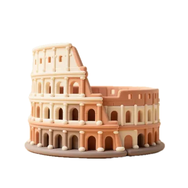
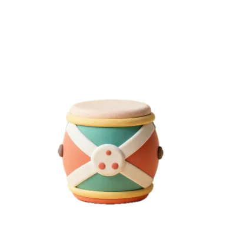

Drapeaux
Un pays, quatre réponses. Le reconnais-tu à son drapeau ?
TON PROCHAIN VOYAGE EST UN QUIZ
Devine les drapeaux et les capitales, explore la carte et collectionne 250 souvenirs. Pars avec Giro : ton prochain souvenir est à une réponse de toi.
Pour iPhone · En six langues


Un petit quiz. Un grand voyage.
01 / Comment jouer
Un drapeau à reconnaître, une capitale à retrouver, une livraison à terminer. Choisis ta prochaine étape.
Un pays, quatre réponses. Le reconnais-tu à son drapeau ?
De Rome à Tokyo : trouve la bonne capitale et élargis tes horizons.
Quel pays est le plus grand ? Le plus peuplé ? Compare-les.
Observe un objet, suis les indices et devine d’où il vient.
Entraîne ta mémoire et retrouve les paires, une découverte à la fois.
Traverse les frontières sur la carte et apporte le souvenir à destination.
02 / 250 SOUVENIRS
250 souvenirs à collectionner : monuments, animaux et objets qui racontent un lieu. Quelle sera ta prochaine découverte ?






Relève le défi quotidien, prolonge ta série et reviens pour les récompenses du jour. Ouvre les valises et découvre les souvenirs qui t’attendent.
03 / GIROVAGO
Quiz, défis et découvertes, toujours à portée de main.


Captures de l’app en italien. Le jeu est disponible en six langues.
Pour signaler un problème, indique le modèle d’iPhone, la version d’iOS et ce que tu faisais. Les signalements GitHub sont publics ; utilise l’e-mail pour les demandes contenant des données personnelles.